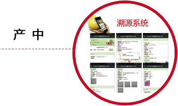

让农民轻松起来，
让消费者健康起来！
国兴农是谁
帮你增值增收
合作的好处
成功案例
首页
GAP种植方案
智慧农业系统
质量安全追溯
农产品品牌策划
农产品销售
关于国兴农
联系国兴农
您当前位置 > 首页 > 国兴农是谁
国兴农是谁
种植业全产业链服务运营商
植兴农-GAP标准化种植
智兴农-农业设施与控制
安兴农-农产品溯源
创兴农-农产品策划
易兴农-农产品销售
GAP种植方案解决种什么，怎么种的问题。
为什么国兴农种出来的草莓货架期长达7天以上？
http://www.guoxn.com
智慧农业智能化管理作物生长环境，提供智慧农业整体解决方案。
带你走近上实东滩特色草莓基地
http://www.guoxn.com
农产品溯源平台实现“移动互联网+大数据”溯源模式。
上海市农委委托国兴农搭建上海市经济作物质量安全信息追溯平台。
http://www.guoxn.com

农产品策划：提升农产品附加值，打造知名农品牌。如何将国产草莓卖到88元/斤？
http://www.guoxn.com
产销对接:实现产销对接，解决农产品销售问题。 近百家高端超市与主流电商为何选择与我们合作？
http://www.guoxn.com